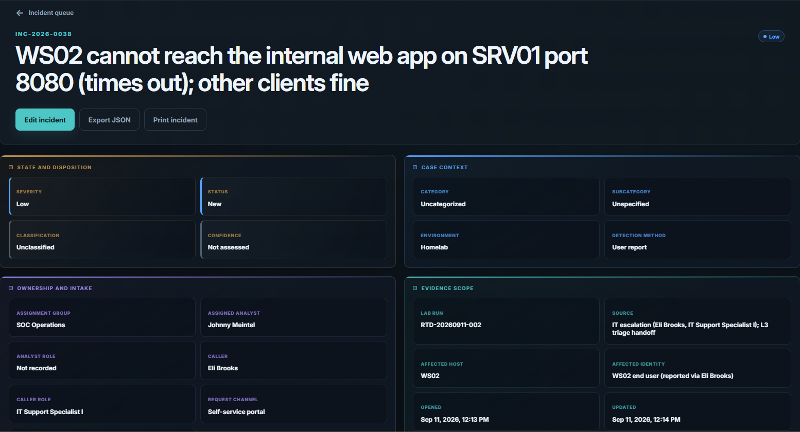
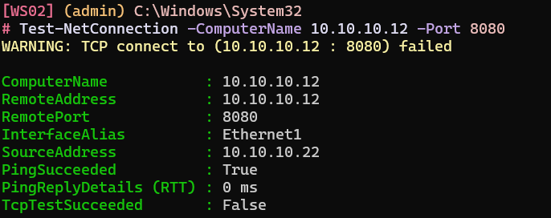
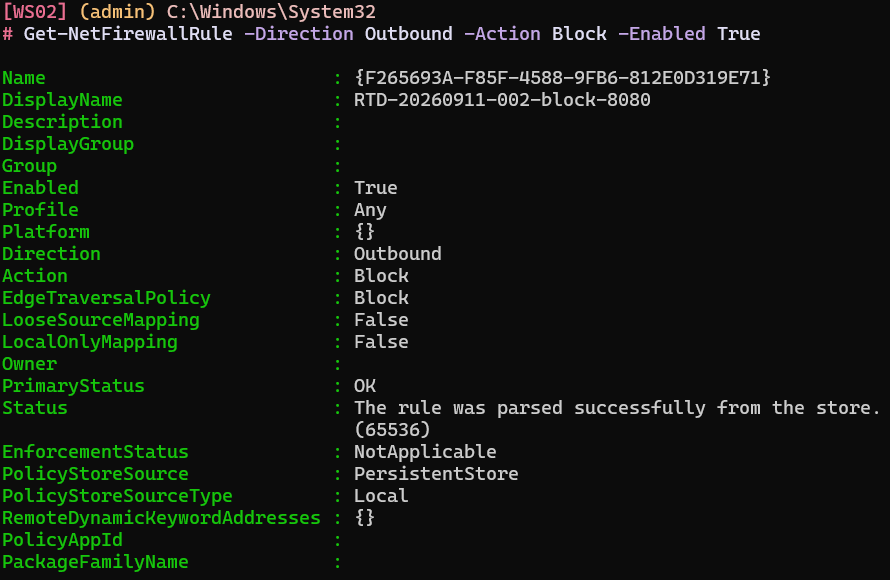
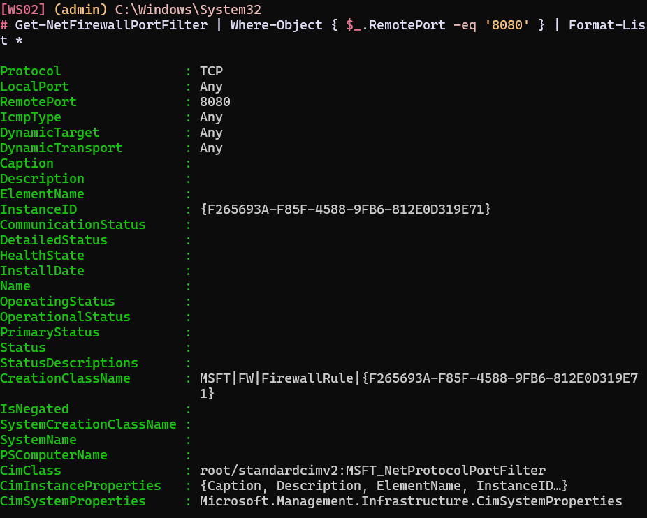
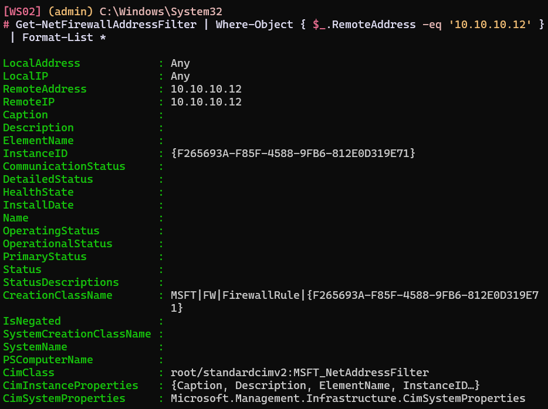
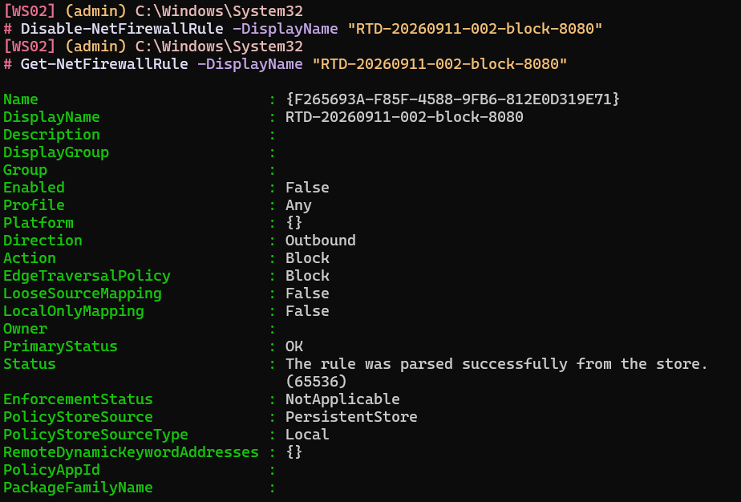
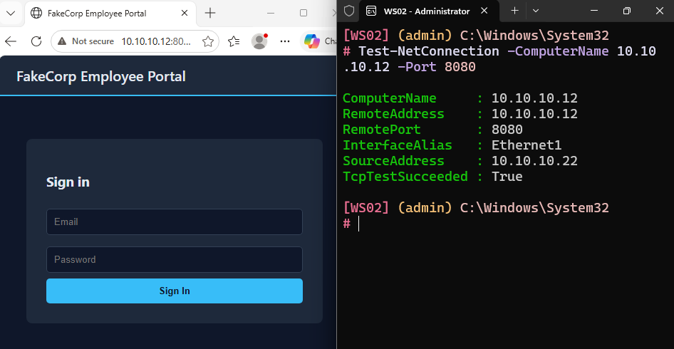

Roll the Dice: INC-2026-0038
I told Claude Code to cause a disruption or change of state somewhere in my homelab, then open an incident for it in my portal and assign it to me. The idea is that Claude plays a senior analyst: it nudges me toward the answer with questions instead of handing it over, and I work the ticket like it is real, without knowing what was done.
This is the first round. Here is the ticket that landed, and how I took it apart.

Initial alert
Johnny - Eli Brooks in IT flagged this and I did a quick first look before handing it to you. An end user on WS02 says the internal web app at http://10.10.10.12:8080 (the FakeCorp intranet portal hosted on SRV01) just spins and times out from their machine. It started around 19:13 UTC today. What I already confirmed: WS02 is online and resolving names, it can ping SRV01 fine, and it still reaches other services on SRV01 - for example port 8090 answers - so both the workstation and the server are up. A second workstation, WS01, loads the same app on 8080 with no trouble. So it looks specific to WS02 reaching that one service. Can you work out why only WS02 times out to SRV01 on 8080, confirm the exact root cause, and get it working again? Note your evidence and steps as you go. Thanks.
Reads like a real service ticket, and it is my first one as a SOC analyst.
1Confirm the symptom myself
The ticket already did some triage, but the first thing I want is to see the failure with my own eyes rather than take the reporter's word for it.
# On WS02 Test-NetConnection -ComputerName 10.10.10.12 -Port 8080 # TcpTestSucceeded : False (but ping to 10.10.10.12 succeeds)

Sure enough, from the command line on WS02, port 8080 on SRV01 comes back False, but the ping succeeds. That split matters: a working ping tells me the host is up and the path is fine, so something is dropping this one TCP connection specifically. WS01 reaches the same app without trouble, so I am not going to go looking for the problem on SRV01 itself. Whatever this is, it is local to WS02.
2Find what is dropping the traffic
A single port failing to one destination, from one host, while ping and other ports work, points at something on WS02 that makes allow-or-deny decisions per destination and port. That is the host firewall. Rather than guess what a rule might be called, I list the rules by what I actually know: outbound, and blocking.
Get-NetFirewallRule -Direction Outbound -Action Block -Enabled True

The name gives it away: RTD-20260911-002-block-8080. (I will be asking Claude to make these less obvious next time.) It looks like it blocks port 8080, but a name is just a label someone typed, so I want to confirm what the rule actually enforces rather than trust it.
Get-NetFirewallPortFilter | Where-Object { $_.RemotePort -eq '8080' } | Format-List *

There it is. Now the address it applies to:
Get-NetFirewallAddressFilter | Where-Object { $_.RemoteAddress -eq '10.10.10.12' } | Format-List *

This confirms the rule applies specifically to SRV01 at 10.10.10.12, and I can prove the port and the address belong to the same rule because both filters and the rule share one InstanceId, F265693A-F85F-4588-9FB6-812E0D319E71. That shared identifier is what turns "I found a suspicious rule" into "this exact rule blocks TCP 8080 to 10.10.10.12."
3Establish when and how it was added
Windows Firewall logs a rule addition as event 2097, so I can pull the who and when.
Get-WinEvent -FilterHashtable @{LogName='Microsoft-Windows-Windows Firewall With Advanced Security/Firewall'; Id=2097; StartTime=(Get-Date).AddDays(-1)} | Format-List *
Message : A rule has been added to the Windows Defender Firewall exception list.
Added Rule:
Rule ID: {F265693A-F85F-4588-9FB6-812E0D319E71}
Rule Name: RTD-20260911-002-block-8080
Origin: Local
Active: Yes
Direction: Outbound
Profiles: Private, Domain, Public
Action: Block
Protocol: TCP
Modifying User: S-1-5-21-953532086-3771123788-3498657558-500
Modifying Application: C:\Windows\System32\netsh.exe
TimeCreated: 9/11/2026 12:13:21 PM
Id: 2097
MachineName: WS02.corp.local
There is that InstanceId again, F265693A-F85F-4588-9FB6-812E0D319E71. That is the smoking gun: the rule that is blocking the traffic is the same rule that was added at 12:13 today, by netsh.exe, under a well-known account. The Modifying User SID S-1-5-21-...-500 ends in the relative identifier 500, which is always the built-in Administrator account. Symptom, mechanism, and attribution all line up.
4Fix it and verify
With the evidence captured, I disable the rule.
Disable-NetFirewallRule -DisplayName "RTD-20260911-002-block-8080" # Verify Get-NetFirewallRule -DisplayName "RTD-20260911-002-block-8080"


I keep the rule around, disabled rather than deleted, so the evidence survives the fix, and I re-test the way I started: 8080 is reachable from WS02 again, the control port 8090 still answers, and WS01 was never affected. The fix is specific, and nothing else moved.
Roll the Dice runs on a difficulty scale of one to ten. The dice landed on level five this round, and even so it went quickly once I stopped trusting the ticket's framing and confirmed each thing myself. Claude assures me the higher levels will not be so forgiving. LabWatch is fully live and now serves as my own SOC analyst training range, one incident at a time.